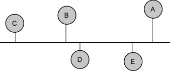
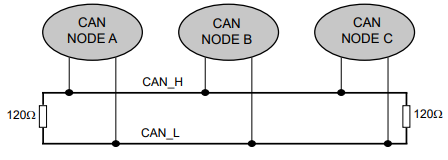
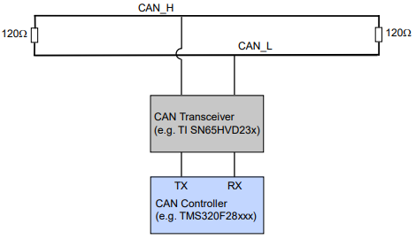
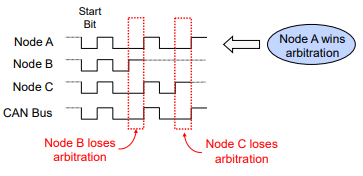
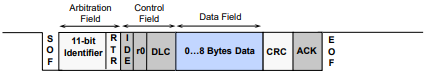
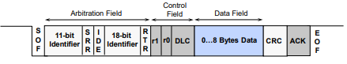
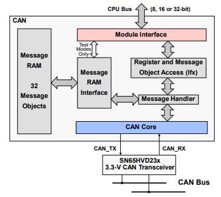

Controller Area Network (CAN)#
CAN is a serial communications protocol which efficiently supports distributed real-time control with a high level of reliability. The CAN module supports bit rates up to 1 Mbps and is compliant with the ISO11898-1 (CAN 2.0B) protocol specification.
CAN Module
Not all C2000 devices have a CAN module. Refer to the Peripheral Reference Guide for a list of supported modules on your device.
CAN does not use physical addresses to address the nodes on the network. Each message is sent with an identifier. The identifier determines if a transmitted message will be received by CAN modules (acceptance filtering) and determines the priority of the message when two or more nodes compete to transmit at the same time (bus arbitration).

CAN Features#
Supports bit-rates up to 1 Mbps
Node-to-node, Multicast and Broadcast capability
Error detection and fault containment (high reliability)
No node addressing (message identifiers are used instead)
Number of nodes not limited by protocol
Less wires (lower cost, less maintenance, and more reliable)
CAN Bus and Node#
CAN Bus#
The MCU communicates on the CAN bus through a transceiver. The CAN bus is typically a twisted pair wire and the transmission rate depends on the bus length and the propagation delay of the transceivers. If the bus length is less than 40 meters, transmission speed of up to 1 Mbps is generally possible.
Two wire differential bus (usually twisted pair)
Max. bus length depend on transmission rate (40 meters @ 1 Mbps)

CAN Node#
The image below shows a model of a typical CAN node:

Principles of Operation#
Data is transmitted in frames. Frames are identifier based, not node address based
Content of message is labeled by an identifier that is unique throughout the network (e.g. rpm, temperature, position, pressure, etc.)
All nodes on network monitor the transmitted message and each performs an acceptance test on the identifier
If message is relevant, it is processed (received); otherwise it is ignored
The unique identifier also determines the priority of the message (lower the numerical value of the identifier, the higher the priority)
When two or more nodes attempt to transmit at the same time, a non-destructive arbitration technique guarantees messages are sent in order of priority and no messages are lost
Non-Destructive Bitwise Arbitration#
Bus contention is resolved via arbitration mimicking a wired AND bus connection
Dominant state (logic 0)
Recessive state (logic 1)

Message Format and Block Diagram#
CAN Message Format#
Data is transmitted and received using Frames
Up to 8 byte data payload per frame
Standard and Extended identifier formats
Standard Frame: 11-bit Identifier (CAN v2.0A)

Extended Frame: 29-bit Identifier (CAN v2.0B)

The CAN module contains a message handler for transmission/reception management, and frame storage. The specification is CAN 2.0B Active – that is, the module can send and accept standard (11-bit identifier) and extended frames (29-bit identifier). The terms “Mailboxes” or “Message objects” may be used interchangeably in the documentation.

Note:
CAN module access may vary from device to device (e.g. access to the DMA). To verify what access the CAN module has for your device, please refer to the Technical Reference Manual
The CAN module contains 32 mailboxes for objects of 0 to 8-byte data length. Each mailbox is
Configurable as transmit/receive mailbox
Configurable with standard or extended identifier
The CAN module mailboxes are divided into several parts:
ID – contains the identifier of the mailbox
DLC (Data Length Code) – contains the length of the message to be transmitted
RTR (Remote Transmission Request) – used to send remote frames
MDL and MDH – hold the data
CAN Summary#
Fully compliant with CAN standard v2.0B
Supports data rates up to 1 Mbps
Thirty-two message objects
Configurable as receive or transmit
Configurable with standard or extended identifier
Programmable acceptance mask
Programmable interrupt scheme (two levels)
Programmable wake-up on bus activity
Two interrupt lines
Self-test mode
Resources#
Get Started with the DCAN Module
The following video shows how to get two LaunchPads communicate with each other over the DCAN module. For this video, the TMS320F280025 LaunchPads are used. However, the procedure explained in this video is applicable for any LaunchPad. The project can_ex5_transmit_receive from the C2000Ware examples is used.
Feedback
Please provide any feedback you may have about the content within C2000 Academy to: c2000_academy_feedback@list.ti.com